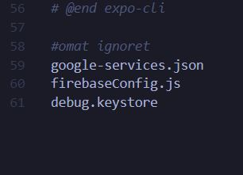
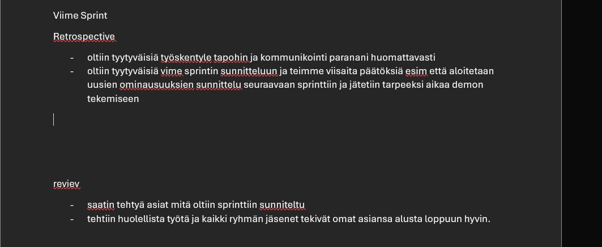

Mitä osasin alussa ja mitä tc:n jälkeen
-Kun kurssi alkoi halusin oppia lisää mobiili sovelluksien kehityksestä ja saada kokonaiskuva miten mobiili sovelluksia tehdään ja minkälaisia työkaluja on olemassa.
-Ticorporaten aikana opin todella paljon minkälaisia työkaluja on ja sain hyvän kuvan myös expon ja reactnativen käyttämisestä. Tutuksi tuli myös firebase vaikke en sitä kovin paljoa käyttänyt. Koen myös että minun tiedon haku ja uuden oppiminen kehittyi todella paljon koska sitä tuli tehtyä todella paljon opin myös android studion käyttöä vaikka se onkin aika raskas läppärillä käyttää
Ohjelmointi
Ticorporatessa minun pääroolini oli ohjelmoija eli tuotin koodia sovellukseen.
-Ticorporaten alussa suuri osa ajasta meni siihen että ryhmäläisten kanssa koitettiin löytää oikea sovelluskehitysalusta joka vastaisi meidän tarpeisiin.
-Ensimmäisenä ehdotin ryhmälle että tehdäänkö pwa sovellus angularilla mutta todettiin että se ei ole meille oikea vaihtoehto. Seuraavaksi alettiin käyttämään svelte nativea. Svelte nativella kun alettiin tekemään aika nopeasti huomattiin että se on todella deprekoitunut ja että se ei oikeastaan toimi. Sen jälkee kuin päätettiin että etsitään vielä uusi framework jota käytetään. Aloin googlaamaan ja etsimään uusia työkaluja ja vastaan tuli react native jota sitten lähdettiin testaamaan ja todettiin että se toimii oikein hyvin ja siihen vielä löytyi todella paljon ohjeita ja muutenkin informaatiota mitä esim sveltestä ei löytynyt ja näin jälkeen päin koen että react native on todella hyvä alusta ja tykkäsin sen käytösta. Mutta olisi pitänyt jättää se expo pois välistä se auttoi alussa mutta loppu vaiheessa se tuotti todella paljon ongelmia
Navigaatio
Sovelluksen alussa tein meille navigaation reactin stack navigaattorilla joka vaikutti todella hyvältä ja sitä se olikin

Kuvassa näkyy osa meidän stack navigaattoria jossa oli todella kätevä ominaisuus jolla pystyi tehdä headerin joka menee sovelluksen joka näkymään ja sen sai myös helposti piilotetua
Tarot sivu
käytin myös paljon aikaa miedän tarot sivuun jossa luetaan päivän tarot kortti
Tässä kuvassa on osa miedän tarot sivua ja kuvassa näkyy osa koodia jossa käyttetään asyncstoragea jonne tallenetaan aiemmin arvottu tarot korrti ja vertaillaan aiempaa tallennusta joka varmistaa että näät yhdenkortin päivässä etkä aina saa uutta kortia kun aikaiset näkymän
Sivun ulkoasu
Sovelluksessa oli isossa roolissa ulkoasu meillä oli todella taitavat visuaaliset suunnitelijat ja muutenkin sovelluksen ulkoasu oli todella hieno
Tässä kuvassa näkee osan meidän sovelluksen tyylitiedosta Juurikin menu näkymän tyylitiedosta josta oli suht vaikea saada suunnitellun näköinen mutta ehkä pointtina tässä on se että käytin paljon aikaa sovelluksen ulkoasuun ja että se olisi suunnitelmia vastaava. ja muutenkin mukava käyttää. suunnitelin myös sitä että miten käyttäjän näkökulmasta on helppo soellusta käyttää ja että rakaisu ei ole sellainen joa vaikea toteuttaa koodaamalla
Yhteen veto
Ohjelmoinnin osalta minulla oli mobiilisovellus kehityksestä hämärä kuva mutta ticorporaten aikana sain todella hyvän kuvan miten mobiilisovelluksia tehdään opin käyttämään hyvin ractnativea ja koen että osaisin tehdä reacnativella jatkossain sovelluksia vaikka ne olisikin vähän monimutkaisempia
Markkinointi
Markkinoinnissa ehkä isoin asia minulle oli tietosuoja tehtävä jonka tärkeyden ymmärsin heti alussa mutta kuitenkin tehtävää tehdessä ymmärsin sen vielä paremmin miten tärkeä se on. Esimerkiksi meillä oli tiedostaja näkyvillä julkisessa githubissa mitä ei ehkä kannataisi olla näkyvillä ne ovat kuvassa alapuolella
tietosuoja tehtävässä myös selvitin paljon sitä mitä uhkia reactnativessa ja expossa on mutta totesin että ne ei ole ehkä meidän sovellukseen kovin aiheellisia koska emme käsittele oikeastaan mitään tärkeää tietoa
suunnitelin sirun kanssa myös meidän somepostauksia ja harjoittelin meidän sovelluksesta hissi puhetta joka ainakin omasta mielestä meni kurssin lopussa ja todella hyvin ja alhaalla olevassa kuvassa on yksi meidän some postauksista
Teimme myös Business model canvasin ja value proposition canvasin
scrum master
Scrummauksesta minulla oli aika huono käsitys kurssin alussa mutta nyt kurssin jälkeen koen että minulla on todella selkeä käsitys siitä miten se toimii meidän ryhmässä scrummaus meni omasta mielestä hyvin ja myös palautteen mukaan mitä sain ryhmäläisiltäni. Emme ehkä olleet parhaita noudattamaan scrum käytänteitä eli emme pitäneet joka päivä esim scrum meettingiä menimme ehkä vähän rennommalla mutta meidän ryhmälle paremmin toimivalla tavalla.
Kuvassa on yksi meidän sprintin retrospectiven ja reviwn tulos
Mutta omalta osaltani totesin scrum masterina sen että se ei ole ehkä minulle paras rooli mutta kuitenkin koien että srum masterina oleminen oli minulle todella opettava ja hyvä koekmus. Opin siis hyvin srum käytänteet ja sen miksi sitä tehdään mutta koen että olen vaan ehkä liian rento ja hetkessä elävä että en usko että työelämässä tulen olemaan scrum master
omasta mielestäni minun olisi pitänyt esim pitää paremmin huolta ja olla tarkempi backlogien kanssa
Testaus
Testaus oli ehkä inhottavin asia mitä tein tämän kurssin aikana koska en saanut mitään testaus alustaa toimimaan sovellukseemme. Yritin ainakin viikon työtunnit tehdä testausta ja koelin Detoxia Meastroa ja appiumia ja kaikkien kanssa oli joka ongelma jota en itse ainakaan osannut ratkaista ja uskon että ne eivät vaan toimineet expon tai reactnativen kanssa. mutta varmasti joku minua pätevämpi olisi saanut jonkun vastaavan toimimaan ja luultavasti minäkin mutta siinä vaiheessa kun olin viikon tehnyt töitä turhaan totesin että se testaus ei voi olla enään prioriteetti kun sovelluksessa oli paljon tärkeää vielä tekemättä ja aika alkoi käydä vähiin joten laitoin sen stopille.
Mutta ei testaus ollut kuitenkaan ihan ensikseen pääsin kyllä testaamaan omia hermoja ja yllätyin miten hyvin ne kesti vaikka meni niin mönkään ja opin myös sen että joskus pitää osata lopettaa ajoissa ja priorisoida asioita tärkeys järjestyksessä ja että aina ei vaan voi onnistua vaikka parhaansa koittaisi
opittu/epäonnistumiset
-Tc aikana suurimmat oppini ovat olleet ryhmätyöskentely, reactnative/expo, markkinoinnin perusteet ja tietosuoja, ja scrum käytänteet
- oivalluksia mitä olen oivaltanut aina ei voi onnistua, alussa suunnitelua ei voi tehdä liikaa
-Tavoitteistani toteutui se että ymärrän/osaan mobbilisovellusten tekemisen hyvin ja kyllä ihan normi reactiakin tuli opittua koska suurin osa komponenteista on ihan react komponentteja. opin myös paremmin toimimaan ryhmässä joka oli minulle tärkeää koska koen että joskus minulla on ongelmia siinä vaikka tykkäänkin paljon ryhmätöistä
-ehkä ainut tavoitteistani mitä en päässyt toteuttamaan oli se testaus jota olisin mieluusti tehnyt ja tahtonut tehdä sen hyvin mutta niinkuin aiemmin mainitsin en onnistunut vaikka kurssin alussa tahdoin tehdä hyvän ja toimivan testausalustan sovellukseen jota olisi voinut helposti pyörittää
Mitä opin suunnitelman ulkopuolelta oli android studion käyttä en ehkä kutsuisi itseäni ammatilasenki mutta tiedän mitä sillä voi tehdä ja osaan perus jutut tehdä android studiolla
Tulevaisuus/vahvuudet
Tulevaisuudessa tahtoisin osata web/mobiili sovellus kehityksen hyvin ja koen että kurssi ehkä auttoi minua ymmärtämään kaikki koulussa oppimani asiat yhtenä könttänä kun ennen ne on ollit palasia jotka ei ole päässäni niin hyvin liittynyt toisiinsa. Työn puolelta haluasin olla pätevä tuottamaan koodia ja minua kiinnostaa myös it-alalla todella paljon myynti asiat ja sitä ehkä haluasin mieluiten tehdä mutta ennen sitä haluan ymmärtää hyvin sen mitä aion myydä. Minun siis pitää oppia vielä enemmän fullstavk sovellus kehityksestä ja haluan oppia arviomaan sitä miten paljon aikaa menee asioden valmiiksi saamiseen
Vahvuuksia minulla on varmaan uuden oppiminen ja tiedon haku tämä tulee ehkä siitä kun tc aikana tehtiin paljon asiota mitä en ollut ikinä tehnyt mutta koin että ymmärsin asiat aika nopeasti ja osasin räätälöidä monista vaihtoehdoiesta parhaan suht nopeasti
Valitsin kyseiset asiat portfoliooni koska koen että niistä saa parhaan kuvan siitä mitä tein kurssin aikana